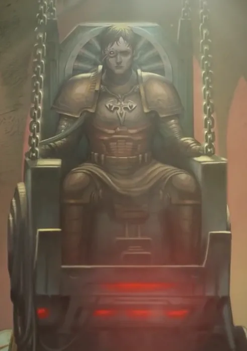
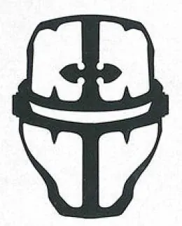
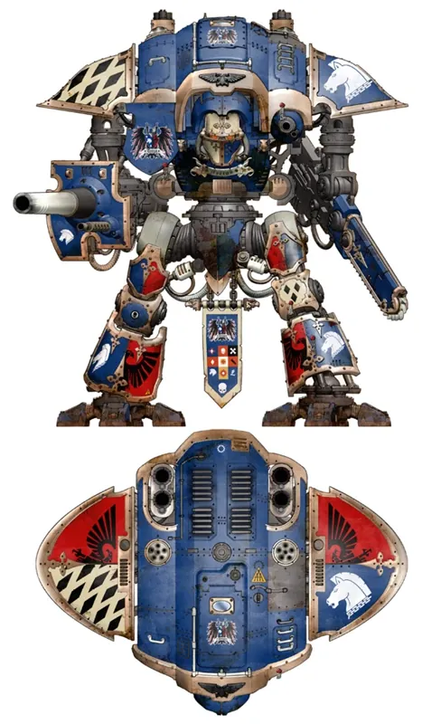
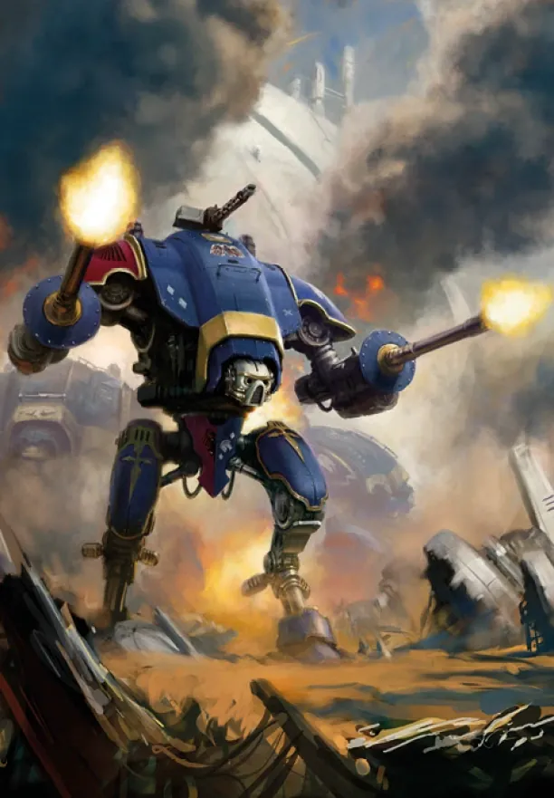
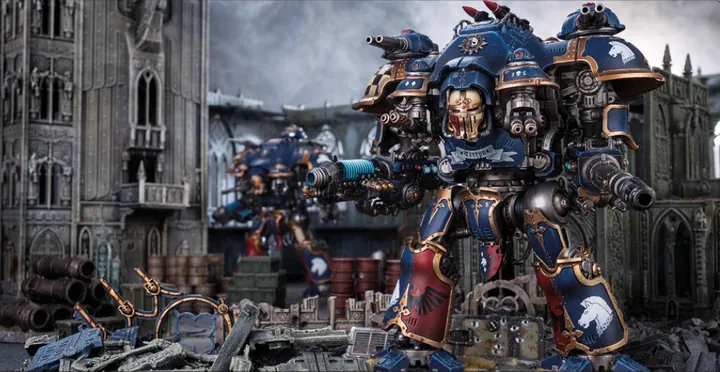
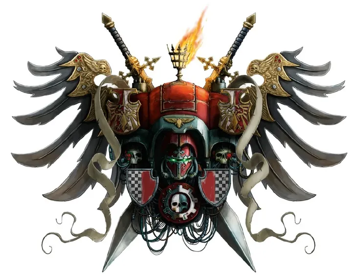
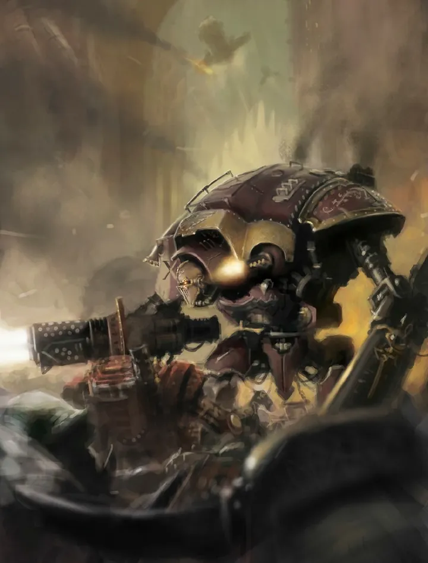

01ภาพรวม

ตระกูลขุนนางที่ขับหุ่นรบสูงหลายชั้นตึก — อัศวินแห่งยุคอวกาศที่ยึดถือเกียรติเหนือชีวิต
02ต้นกำเนิด
ในยุคมืดของเทคโนโลยี มนุษย์ตั้งอาณานิคมบนดาวอันตรายโดยใช้หุ่นรบ Knight ปกป้อง ผู้ขับขี่กลายเป็นชนชั้นขุนนางที่เรียกว่า Noble เมื่อ Great Crusade มาถึง ตระกูลเหล่านี้สาบานต่อจักรพรรดิ (Questor Imperialis) หรือต่อดาวอังคาร (Questor Mechanicus)
03เนื้อเรื่องเจาะลึก
ดาวศักดินาจากยุคก่อน
ในยุค Dark Age of Technology มนุษย์ส่งผู้ตั้งอาณานิคมไปดาวไกล พร้อมหุ่น Knight ป้องกันสัตว์ร้าย เมื่อยุค Age of Strife ตัดการติดต่อ ดาวเหล่านี้กลายเป็นสังคมศักดินาที่มีอัศวินขับหุ่นเป็นชนชั้นปกครอง จน Mechanicus และจักรวรรดิค้นพบอีกครั้งในยุค Great Crusade
04ยุค 30K — ในยุค Great Crusade และ Horus Heresy

ยุค 30K ตระกูล Knight ส่วนใหญ่ร่วม Great Crusade ช่วง Heresy บางตระกูลทรยศ กลายเป็นต้นกำเนิดของ Chaos Knights
ดูภาพรวมยุค 30K ทั้งหมดที่ เนื้อเรื่องยุค 30K และความต่างของสองยุคที่ เปรียบเทียบ 30K vs 40K
05นิสัยและวัฒนธรรม
- ผู้ขับเชื่อมต่อจิตกับ Throne Mechanicum ที่เก็บวิญญาณบรรพบุรุษไว้
- ยึดถือเกียรติ คำสาบาน และลำดับชั้นแบบศักดินา
- Freeblade: อัศวินพเนจรที่ไม่มีตระกูล
06จุดที่น่าสนใจ
- House Terryn, House Raven, House Taranis คือตระกูลที่มีชื่อ
- Canis Rex อัศวินพเนจรในตำนาน
07ความสามารถพิเศษ
สิ่งที่ทำให้ Imperial Knights แตกต่างจากทัพอื่น — ทั้งพลังที่ติดตัวมาทั้งเผ่า/ทัพ และความสามารถของบุคคลสำคัญ
ของทั้งเผ่า/ทัพ

Throne Mechanicum — บัลลังก์วิญญาณบรรพบุรุษ
นักขับเชื่อมจิตกับบัลลังก์ที่เก็บความทรงจำและบุคลิกของนักขับทุกคนก่อนหน้า ทำให้ได้ประสบการณ์รบหลายร้อยปี แต่ถ้าจิตใจไม่แข็งพอ อาจถูกวิญญาณบรรพบุรุษครอบงำจนเสียสติ

Ion Shield
โล่พลังงานที่หันไปรับกระสุนจากทิศทางที่กำหนด ทำให้หุ่นทนทานมากต่อการยิง

คำสาบานของอัศวิน
ตระกูลอัศวินผูกพันกับจักรวรรดิ (Questor Imperialis) หรือกับ Mechanicus (Questor Mechanicus) ด้วยคำสาบานศักดิ์สิทธิ์ และมีจรรยาบรรณอัศวินที่เข้มงวด
ของบุคคลสำคัญ

Canis Rex
Freeblade ในตำนานSir Hekhtur นักขับที่ถูก Chaos จับไปทรมาน หนีออกมาได้ และกลายเป็น Freeblade ออกล่า Chaos ไม่หยุด
08หน่วยและบทบาทในกองทัพ
Imperial Knights คือตระกูลขุนนาง (Noble House) บนดาวศักดินาที่ขับหุ่นรบ Knight สืบทอดกันมาตั้งแต่ยุคก่อนจักรวรรดิ นักขับเชื่อมจิตกับหุ่นผ่านบัลลังก์ Throne Mechanicum

High King / Queen
ไฮคิงผู้ปกครองของ Noble House นำเหล่าอัศวินลงสนามด้วยตัวเอง
Noble (Knight pilot)
โนเบิล (นักขับ)ขุนนางที่ผ่านพิธี "Ritual of Becoming" เชื่อมจิตกับบัลลังก์ Throne Mechanicum ซึ่งเก็บความทรงจำของนักขับทุกรุ่นก่อนหน้า
Knight Paladin / Errant
อัศวินพาลาดิน / เออร์แรนต์หุ่น Questoris-class สูงราว 12 เมตร รุ่นหลักของทัพ ถือปืนใหญ่และเลื่อยยักษ์ (Reaper Chainsword)

Armiger
อาร์มิเจอร์หุ่นขนาดเล็ก ขับโดยข้ารับใช้ (Bondsman) ที่ถูกผูกกับ Knight ใหญ่ด้วย Helm Mechanicum

Knight Castellan
อัศวินแคสเทลลันหุ่น Dominus-class ขนาดใหญ่ที่สุดของทัพ ติดอาวุธพลาสมาขนาดยักษ์

Sacristan
แซคริสแตน"ช่าง" ของ Noble House ดูแลและซ่อมหุ่น Knight มีความรู้ที่สืบทอดกันในตระกูล ใกล้ชิดกับ Mechanicus

Freeblade
ฟรีเบลดอัศวินพเนจรที่ไม่มีตระกูล (อาจเพราะตระกูลล่มสลายหรือถูกเนรเทศ) ปรากฏตัวช่วยจักรวรรดิในยามวิกฤติแล้วจากไป
09วีรกรรมและเหตุการณ์สำคัญ
สาบานต่อจักรพรรดิ
ตระกูลส่วนใหญ่ร่วม Great Crusade
Indomitus Crusade
House Taranis ทุ่มกำลังเกือบทั้งหมดร่วมครูเสด
10ตัวละครสำคัญ
Canis Rex (Sir Hekhtur)
Freeblade ในตำนานหนีจาก Iron Warriors และปลดปล่อยทาสได้หลายพันคน
11ยุค 40K — สหัสวรรษที่ 41
ยุค 40K Knight World หลายร้อยดาวส่งอัศวินร่วมรบกับทัพจักรวรรดิ
12เนื้อเรื่องล่าสุด (Era Indomitus / M42)
หลายดาวถูก Great Rift กลืนหาย ที่เหลือร่วม Indomitus Crusade และปกป้องดาวของตนจาก Chaos
หลังการเกิด Great Rift ปฏิทินของจักรวรรดิคลาดเคลื่อน เหตุการณ์ยุคปัจจุบันจึงมักระบุเพียง 'M42' ไม่มีปีที่แน่นอน
13แกลเลอรี